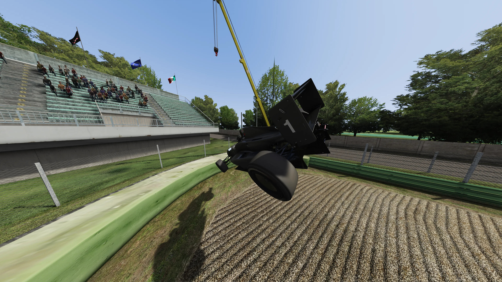
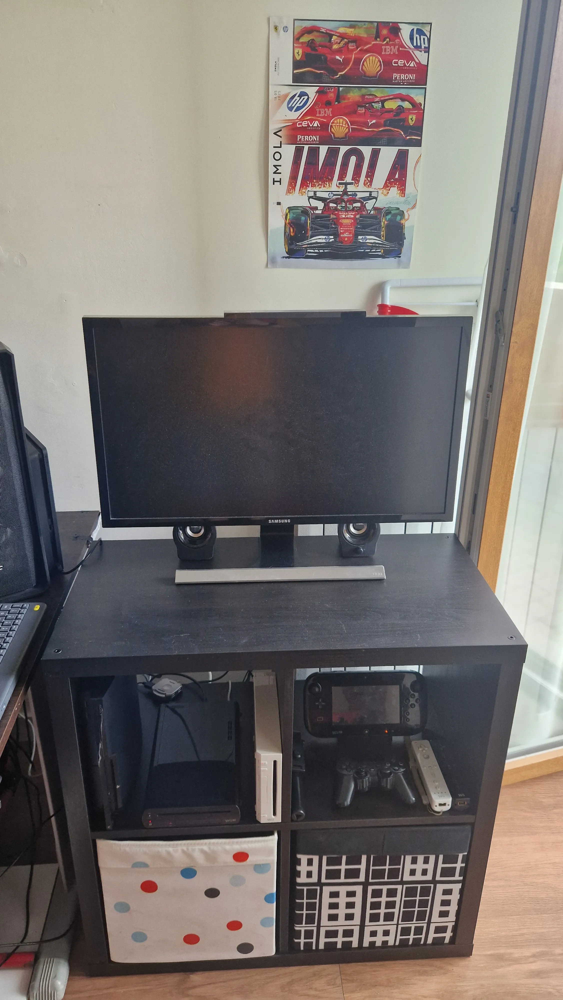

"SimRacer perfezionista e Content Creator alla ricerca del divertimento. Staccare ascoltando la mia stessa musica aiuta ad abbassare di 3 decimi il primo settore, senza capire come sia accaduto."

SimRacer perfezionista e Content Creator alla ricerca del divertimento. I tempi li abbasso con un martello pneumatico che molti rifiuterebbero di utilizzare 🔨
"SimRacer perfezionista e Content Creator alla ricerca del divertimento. Staccare ascoltando la mia stessa musica aiuta ad abbassare di 3 decimi il primo settore, senza capire come sia accaduto."

"Gli Spec Labs, laboratorio metà monnezzario e metà cucina ad alte prestazioni. Riciclare periferiche dimenticate da portare al limite, dando vita alle tracce che qualcuno (se esiste) ascolta."

"Cresciuto a pane e Gran Turismo. Il mio legame con il motorsport virtuale è iniziato a 4 anni. Dal Retrogaming su GT4 Spec 2, fino a GT7 su PS4, sono qua a dare fastidio ai Direct Drive."

"Se il mio setup vive di sopravvivenza, NikDeRok è quello con la potenza bruta. Collaboriamo sui video, parliamo di PC e facciamo nascere le idee più folli. Io metto il manico, lui porta gli FPS a 3 cifre."
Perché non mi interessa tracciare cosa mangi a colazione o vendere i tuoi dati. Senza cookie, senza profilazione, senza pop-up fastidiosi. Solo codice puro e rispetto per chi naviga.
Non hanno ancora sporto denuncia formale, quindi considero i colpi di scopa sul muro come un modo per tenere il tempo. Finché non salta il contatore, la sessione continua.
Perché scalda così tanto che in inverno mi fa risparmiare sui riscaldamenti. E con la luce giusta gira video che certi telefoni da 1000€ si sognano. #ShotOnP20.
Perché questi strumenti online caricano MB di spazzatura inutile. Farlo da zero garantisce il 100% del controllo, velocità atomica e la libertà di ficcarci tutti gli Easter Egg che voglio.
Se ha uno schermo, un processore e un cavo di alimentazione, prima o poi ci girerà sopra Doom. È una condizione clinica irrisolvibile.
Hai ancora dubbi o perplessità su di me?
Premi qui per chiarirli :)Disponibile per collaborazioni con artisti e brand, anche per consulenze.